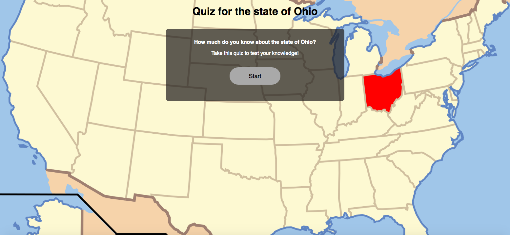
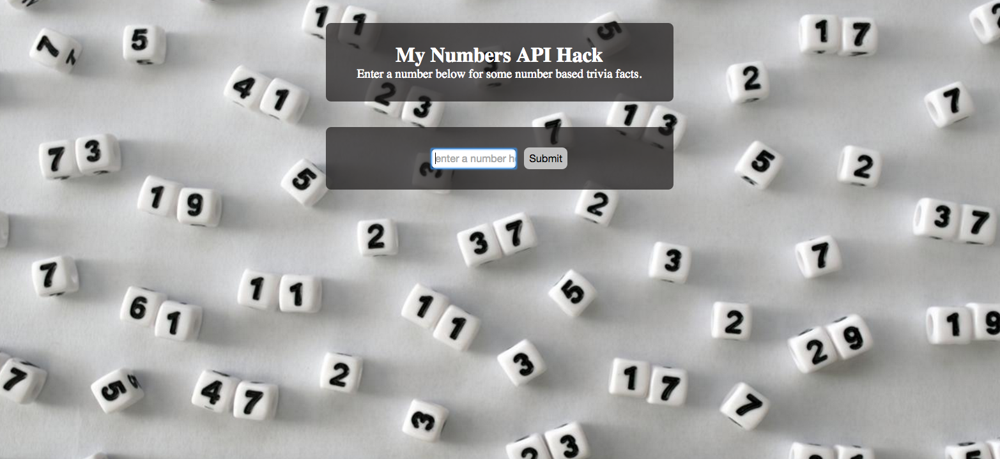
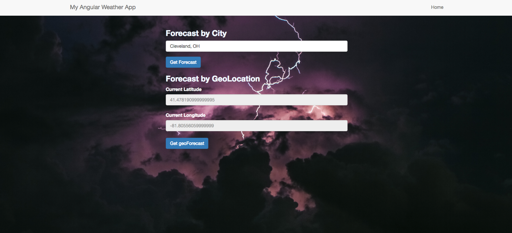

-

This app quizzes you on your knowledge of the state of Ohio. The app uses JavaScript, jQuery, HTML and CSS.
-

This app uses ajax and a 3rd party API. The user enters a number, and the app returns a piece of trivia based upon the number provided.The app uses JavaScript, jQuery, HTML and CSS.
-

This app provides a weather forecast based upon a city entered by the user, or by allowing the browser to use your geolocation. A simple forecast for 2, 5, or 7 days can be returned. The app uses Angular and Boostrap.
-

This is one of my first projects. This was done on Codepen using just HTML/CSS and Bootstrap.
-
My node project is for a password protected blog. It is currently in progress.